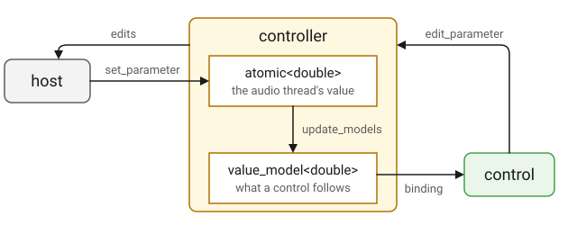

Controller
Overview
A controller declares a plugin’s parameters, and the base does the rest.
It holds every value, hands it out as the type the plugin thinks in, takes
the edits the editor makes and passes them to the host, writes and reads
the state, and keeps the plugin’s presets. This is the whole of the gain
example’s controller:
class gain_controller : public q_plug::controller
{
public:
using decibel = cycfi::q::decibel;
enum { volume_id };
// The fader runs from silence, the 24 bit floor, up to +10 dB.
static constexpr decibel silence = cycfi::q::dB(-144.0);
static constexpr decibel max_volume = cycfi::q::dB(10.0);
parameter_list parameters() const override;
decibel volume() const;
parameter const& volume_param() const;
};parameters() is the one function a controller must write. Everything
below it is the plugin’s own convenience: an enum naming the indices, and
an accessor per parameter that reads the value back as a decibel rather
than as a bare double.
The controller is the hub the other two parts attach to. It is made first, and the processor and the presenter are each handed a reference to it. Neither sees the other, so the audio thread and the user interface stay independent, and the controller is what makes that possible: it holds each parameter in two places, one for each side.
A Parameter, Held Twice

Every declared parameter is held as an atomic double, which the audio
thread reads and writes without waiting, and as an Elements
value_model<double>, which a control links to. Both start at the
parameter’s initial value.
When the host moves a parameter, the value lands in the atomic through
set_parameter, and the adapter asks the host for a main-thread callback.
There, update_models brings the models up to date, and the controls
follow. It assigns only the models whose value has actually changed. A
model assignment always notifies, so assigning all of them would redraw the
whole editor on every callback, and a value the host echoes back mid
gesture would fight the control the user is dragging.
The other direction starts in the editor. A control’s binding calls
edit_parameter, which stores the atomic, sets the model and passes the
edit on to the edit_sink the plugin installed, which queues it for the
host. The audio thread drains that queue without blocking, so an edit never
holds up either side.
A parameter is addressed by its index in the list parameters() returns.
The id belongs to the host and to the state; the adapter translates between
the two. See parameter.
State
The state is one JSON object, and it is the same thing whether the host is saving a session or the plugin is saving a preset:
{
"plugin": "com.qplug.delay",
"version": 1,
"params": [
{"id": 1, "name": "Delay", "value": 0.35},
{"id": 2, "name": "Feedback", "value": 50.0}
],
"view": {"scale": 1.0},
"preset": {"name": "Slapback", "edited": false}
}plugin is info().id and keeps a state written by another plugin out.
version is info().state_version, so a plugin can tell an old layout of
its values from the current one. A state written by a later version than
the plugin knows is refused rather than misread.
params carries every parameter. A value is found by id, and failing that
by name, so a plugin may add, remove, reorder or rename its parameters and
an old state still loads. An entry the plugin no longer has is skipped,
and a parameter the state does not carry takes its default. Values are
clamped into the parameter’s range on the way in.
view holds the editor’s zoom and preset the preset the panel shows.
Both belong to the session rather than to the sound, so save_preset
leaves them out, and with them the parameters marked dont_save.
Presets
A preset is a named state. Factory presets come with the plugin, in
factory_presets.json among its resources; user presets live in a
presets.json of the user’s own, in a directory named after the plugin’s
vendor and name:
- macOS
-
~/Library/Application Support/<vendor>/<name> - Windows
-
%APPDATA%\<vendor>\<name> - Linux
-
$XDG_CONFIG_HOME/<vendor>/<name>, or~/.config/<vendor>/<name>
Both files are one JSON object of preset name to state, and both are read on first use, so a plugin with no presets pays nothing. Presets keep their files' order: the factory ones as the plugin lists them, a cartridge’s 32 voices in the cartridge’s order, say, and the user’s in the order they were added, a new one at the end.
The names the plugin ships are the plugin’s. save_preset refuses one,
rather than leave a preset that loads as the user’s while the list calls
it factory and nothing in the editor will delete it. Only user presets
can be saved or deleted.
The preset shown is the name the state was last loaded from or saved as, and whether any parameter has moved since, by the panel or by the host. Both ride in the state, so a session comes back showing what it was saved with. Naming a preset starts it unedited, and a preset file carries neither.
Nothing here has to be wired. The standard header along the top of the
editor lists the presets, loads the one chosen, saves and deletes, and
shows the current name with a * when it has been edited, all of it
through the controller.
Declaration
struct edit_sink
{
virtual ~edit_sink() = default;
virtual void begin_edit(int index) = 0;
virtual void edit_parameter(int index, double value) = 0;
virtual void end_edit(int index) = 0;
};
class controller
{
public:
using parameter = cycfi::q_plug::parameter;
using parameter_list = iterator_range<parameter const*>;
using name_list = std::vector<std::string>;
using model_type = elements::value_model<double>;
using json = nlohmann::json;
controller();
virtual ~controller();
virtual parameter_list parameters() const = 0;
virtual double get_parameter(int index) const;
model_type& model(int index);
template <typename T>
T get_parameter(int index) const;
virtual void set_parameter(int index, double value);
template <typename T>
void set_parameter(int index, T value);
std::uint32_t changes() const;
void update_models();
void begin_edit(int index);
virtual void edit_parameter(int index, double value);
void end_edit(int index);
template <typename T>
void edit_parameter(int index, T value);
int index_of(parameter::id_type id) const;
int index_of(std::string_view name) const;
json state() const;
bool state(json const& j);
bool save_state(ostream& out) const;
bool load_state(istream& in);
float view_scale() const;
void view_scale(float s);
std::string const& preset_name() const;
void preset_name(std::string name);
bool preset_edited() const;
void preset_edited(bool e);
name_list preset_names() const;
bool has_preset(std::string_view name) const;
bool is_factory_preset(std::string_view name) const;
bool load_preset(std::string_view name);
bool save_preset(std::string_view name);
bool delete_preset(std::string_view name);
using named_state = std::pair<std::string, json>;
using named_states = std::vector<named_state>;
bool add_presets(named_states const& states);
protected:
virtual void save_extra(json& j) const {}
virtual void load_extra(json const& j, std::uint32_t version) {}
void init(edit_sink& s);
};
using controller_ptr = std::unique_ptr<controller>;Expressions
Notation
ctl-
Object of a type derived from
controller. index-
An
int, a parameter’s index inctl.parameters(). id-
Object of type
parameter::id_type. name-
A parameter’s name, or a preset’s.
v-
A
double, a value in the parameter’s units. val-
A value of type
T. T-
A type
parameter_traitsis specialized for. j-
Object of type
controller::json. in,out-
A
q_plug::istreamand aq_plug::ostream. s-
A
float, the editor’s scale. e-
A
bool. sink-
Object of a type derived from
edit_sink. version-
A
std::uint32_t, the version a state was written with. states-
A
controller::named_states: preset names, each with a state asstate()writes one.
Parameters
| Expression | Semantics | Return Type |
|---|---|---|
|
The plugin’s parameters, in order. The one function a controller must write. |
|
The list is fixed for the life of the plugin, so it is returned from a
static array. The index of a parameter in it is how the plugin’s own code
addresses it, and the enum that names those indices belongs next to the
array. The delay example declares two:
parameter_list delay_controller::parameters() const
{
static parameter params[] =
{
parameter{ 1, "Delay", 350_ms }.range(0.0, max_delay.rep),
parameter{ 2, "Feedback", 50.0 }.range(0.0, 100.0).unit("%")
};
return { params };
}| An id is a parameter’s identity for the life of the plugin and is never reused nor renumbered. A retired id is left unused rather than given to something else, so its index and its id part company. That is why the enum is the plugin’s index into the list and not a list of ids. |
Values
| Expression | Semantics | Return Type |
|---|---|---|
|
The value, in the parameter’s units. |
|
|
The same value as a |
|
|
Set the value and mark the preset edited. |
|
|
The same, from a |
|
|
A count that moves whenever
a parameter not marked
|
|
|
The model a control links to. |
|
|
Bring the models up to date with the values, and the editor with them. |
|
get_parameter and changes are the calls the audio thread makes. They
read atomics and never wait. The rest are main thread.
changes is how the plugin knows to call the processor's
parameters_changed: it compares the count before each run of frames.
Setting a parameter to the value it already holds is no change.
The template forms hand the value over as the type the parameter was
declared with, which is what a plugin actually works in. A controller
usually wraps each one in an accessor of its own, as anna_5 does:
inline q::frequency anna_controller::cutoff() const
{
return get_parameter<q::frequency>(cutoff_id);
}A Debug build asserts that the type asked for matches the kind the parameter was declared with. Where a parameter’s units and the plugin’s are not the same thing, the accessor is where they are reconciled:
inline double anna_controller::chorus_mix() const
{
return get_parameter<double>(chorus_mix_id) / 100.0;
}set_parameter is what the host’s own changes arrive through, so a
controller that wants to know when a parameter moves overrides it and
calls the base. The call comes from the audio thread while the plugin is
processing, so an override must not block or allocate there. Loading a
state or a preset goes through it too.
update_models is called on the main thread after the host has changed
anything, and by state once a state is loaded. It assigns only the
models whose value has changed.
A control follows a model; it does not poll a value. A plugin that
moves a parameter itself, outside an edit, has to call update_models for
the editor to see it.
|
Edits
| Expression | Semantics | Return Type |
|---|---|---|
|
Tell the host a gesture on this parameter has started. |
|
|
Set the value, the model, and tell the host. |
|
|
The same, from a |
|
|
Tell the host the gesture has ended. |
|
These are what the editor changes a parameter through, on the main thread.
A presenter's bind calls all three: the two gesture calls bracket a drag,
so the host records it as one move rather than a scatter of values, and
edit_parameter carries each value as the control passes through it. A
plugin binds its controls and calls none of this itself.
edit_parameter is virtual, so a controller that has to act on an edit
from the editor, and not on a change from the host, overrides this one
rather than set_parameter.
The three go out through the edit_sink the plugin installed. That is
plugin, which queues them and passes them to the host from the audio
thread when that takes no wait, so the editor never blocks on the host.
Lookup
| Expression | Semantics | Return Type |
|---|---|---|
|
The index of the parameter with
this id, |
|
|
The index of the parameter with
this name, |
|
These are how a state finds its way back to the current parameters, by id first and then by name. A plugin rarely needs them, since it knows its own indices.
State
| Expression | Semantics | Return Type |
|---|---|---|
|
The state as JSON. |
|
|
Take the state in |
|
|
Write |
|
|
Read a state from |
|
The host calls save_state and load_state through the adapter, which
wraps the host’s own stream as a q_plug::ostream or istream, two
virtuals wide. A plugin does not call these.
A refused state changes nothing. A state that is taken sets every
parameter, those it carries and those it does not, then the zoom and the
preset, then calls load_extra and update_models.
A state older than a feature simply lacks its key. One without
view leaves the zoom where it is, and one without preset reads as no
preset at all rather than as the preset that was showing.
|
View Scale
| Expression | Semantics | Return Type |
|---|---|---|
|
The editor’s scale, 1 for the size the plugin declares. |
|
|
Set it. |
|
The zoom is kept here, with the state, so a session comes back at the zoom it was saved at. The presenter reads it when the editor opens and writes it when the user zooms; a plugin has no reason to touch it. A preset does not carry it.
Presets
| Expression | Semantics | Return Type |
|---|---|---|
|
Every preset’s name, each once: the factory ones first, then the user’s, each in its file’s order. |
|
|
Whether there is a preset by that name. |
|
|
Whether the plugin ships a factory preset by that name. |
|
|
Take that preset’s state, tell the host the values, and name it. False if there is no such preset or its state is refused. |
|
|
Save the current state as a user preset and write the user’s file. False if the name is a factory preset’s or the file cannot be written. |
|
|
Delete that user preset and write the user’s file. False if there is no user preset by that name. |
|
|
Add each named state as a
user preset, replacing a
user preset of its name,
with one write of the
user’s file. A factory
name is refused, as
|
|
|
The preset the panel shows. |
|
|
Set it, unedited. |
|
|
Whether a parameter has moved since. |
|
|
Set that. |
|
load_preset tells the host every saved value, as an edit of its own.
Taking the state alone would only set the values, which is right when it
is the host that is loading, but a preset chosen in the editor is the
plugin’s own edit: unannounced, the host’s automation would still hold the
values the preset replaced.
save_preset does not name the preset it just wrote. Naming it is a
separate step, so the caller decides whether the panel should follow. The
header’s Save dialog does both. In outline, since its handler in
q_plug/src/header.cpp first refuses a factory preset’s name and opens an
alert when the file cannot be written:
auto name = to_utf8(input->get_text());
if (!p.ctrl().save_preset(name))
return;
p.ctrl().preset_name(std::move(name));add_presets is for states from elsewhere, many at once: a synth that
imports a cartridge of 32 voices adds them in one write rather than 32,
and they appear in the menu in the order given. Dexter does this with the
DX7 cartridges dropped on it:
named_states states;
for (auto const& v : voices)
states.emplace_back(name_of(v), state_of(v));
add_presets(states);
A user file written before save_preset refused factory names may
still hold one that shadows a factory preset. load_preset takes the
factory one, which is the preset preset_names lists under that name.
The shadowed entry stays in the file and no longer loads.
|
Plugin State
| Expression | Semantics |
|---|---|
|
Add whatever else the plugin keeps
to the state |
|
Take it back, with the version the state was written with. Empty in the base. |
A plugin with more to keep than its parameters overrides these. Everything
a parameter covers is already saved, so this is for what is not a
parameter. version is the state_version the state was written with, so
a plugin can read an older layout of its own.
Both are called on the main thread, save_extra at the end of state()
and load_extra after the parameters are set and before the models are
brought up to date. Keep to keys of the plugin’s own; plugin, version,
params, view and preset are taken.
| Expression | Semantics |
|---|---|
|
Hand the controller the sink its
edits go to, and size and seed the
parameters from |
plugin calls init once, on the main thread, before anything else runs.
It cannot happen in the constructor, since parameters() is virtual. A
test that stands a controller up without a plugin calls it from a derived
class with a sink of its own.